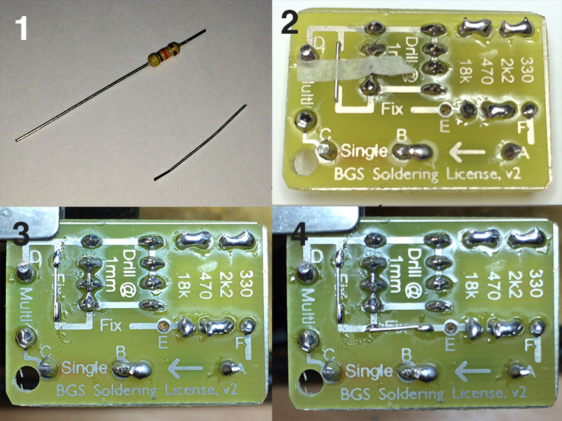

Track repairs
Table of Contents
1 Track Repairs
We're nearly there now, and you'll soon have the skills you need for nearly all the soldering work you'll perform up to A level! Sometimes, when we solder together a PCB, the tracks can lift off due to overheating, or through imperfections in the way the board was manufactured. When this happens, rather than make a whole new PCB and start from scratch, we can perform track repairs.
Your first repair
- To perform a track repair, a short piece of wire (single-core, or a resistor leg) is soldered either side of where there is a break in the PCB track. The areas you need to repair have "Fix" written on them.

- Step 1: Start by taking a resistor (any value you like), and cutting the leg off it, as shown in the picture above. You could also cut the other leg off at this point too for your second repair. Don't lose it, though!
- Step 2: Use a side cutter to shorten the resistor leg, so that it sits about 2mm either side of the gap you're going to repair. Now, using scissors, cut a thin piece of masking tape, and use this to stick the wire over the gap and to hold it in place on the PCB. This is very fiddly, so it might take a few attempts to get it right. Just make sure its sitting nice and flat on the PCB.
- Step 3: Carefully put the soldering iron onto the PCB, ensuring that you heat up both the leg and the track. After 3s, apply a small amount of solder, which should flow neatly onto the area. Remove the soldering iron slowly, then after a few seconds check that the wire has bonded to the track. Repeat the process for the other end of the repair.
- Step 4: Remove the tape, and gently check that both sides are bonded to the board. You can now repeat the process for the other repair.
2 Finishing Touches
Sanding edges and corners

- Your soldering license is now complete, and ready for multimeter testing to confirm everything works properly. If you're going to put it on your keys, you can use a sheet of glasspaper to gently round the corners and edges off your PCB to stop it from ripping your pockets up. Well done!